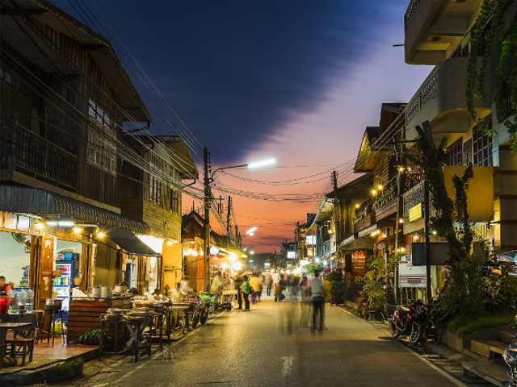

แหล่งท่องเที่ยวห้ามพลาด

1. อุทยานแห่งชาติภูกระดึง
สถานที่ท่องเที่ยวยอดนิยมตลอดกาล นักท่องเที่ยวต้องเดินเท้าขึ้นเขาเพื่อไปชมธรรมชาติ ป่าสน และจุดชมวิวพระอาทิตย์ขึ้นที่ผานกแอ่น และพระอาทิตย์ตกที่ผาหล่มสัก

2. ถนนคนเดินเชียงคาน
สัมผัสวิถีชีวิตริมฝั่งโขง ชมบ้านไม้เก่าแก่ที่อนุรักษ์ไว้อย่างดี ในช่วงเย็นจะเปลี่ยนเป็นถนนคนเดิน มีอาหารพื้นเมืองและของที่ระลึกจำหน่าย บรรยากาศสุดโรแมนติก